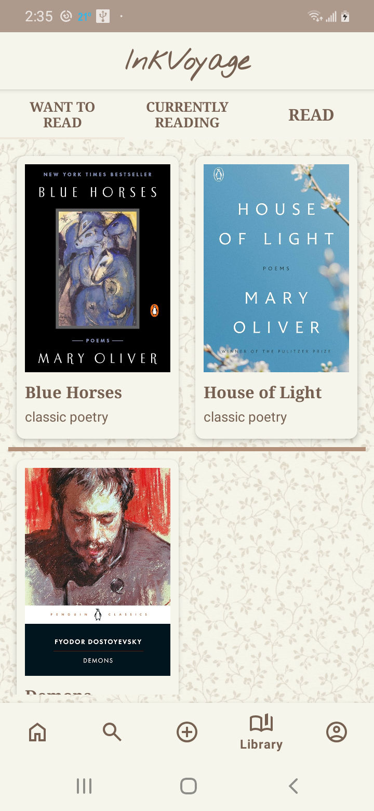
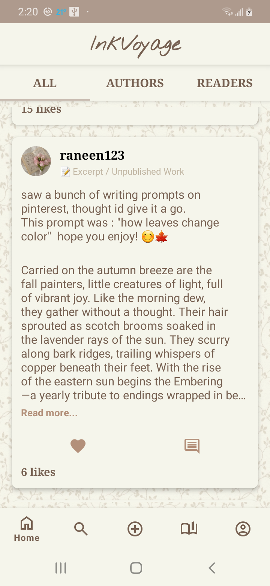
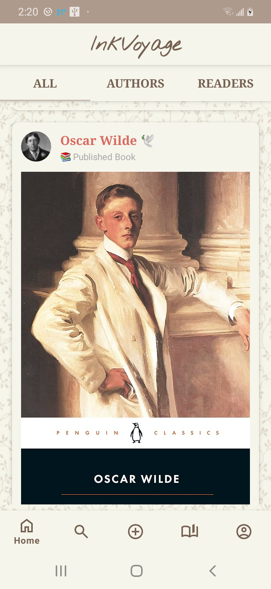
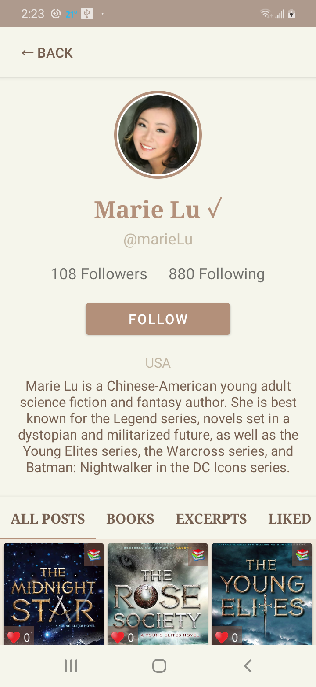
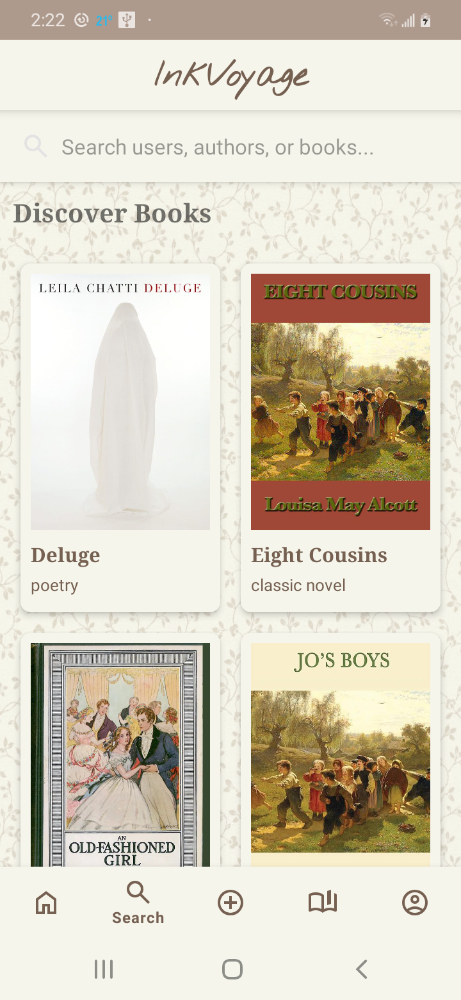
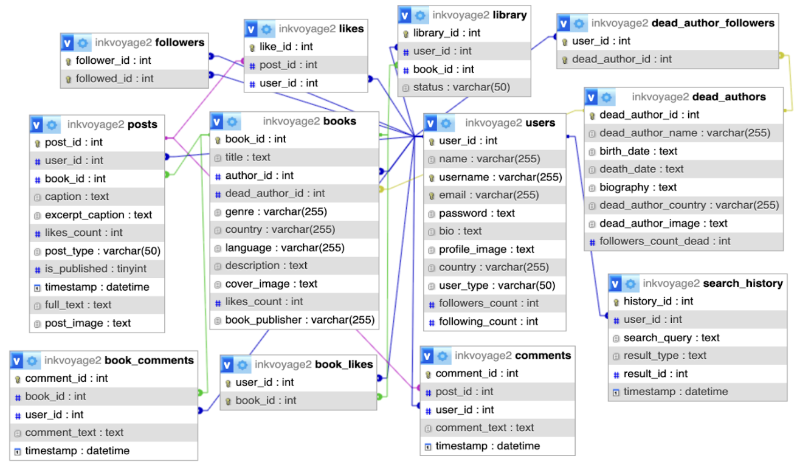

Project Overview
InkVoyage is a social media platform designed to bridge the gap between book lovers and authors from around the world. Users scroll through a feed of books and author posts, interact through likes and comments, and build personal libraries of books they have read, are reading, or want to read.
Unlike traditional book platforms that focus primarily on reviews or sales, InkVoyage emphasizes community, cultural exchange, and direct engagement between readers and writers across the globe.
Images & Videos





Key Features
- Social-media style feed for books and posts
- Author and reader profiles with follow system
- Likes, comments, and saved books
- Personal libraries: Read, Reading, Want to Read
- Live authors and historical (dead) author profiles
- Search with discovery and history tracking
Database & System Design
InkVoyage uses a structured relational database to support social interactions, book data, and user activity tracking.
- Users: Core table for readers and authors
- Dead Authors: Historical authors with biographies
- Books: Linked to either live or deceased authors
- Posts & Comments: Social content and discussions
- Likes & Followers: Engagement and social graph
- Library: User reading status tracking
- Search History: Analytics and user behavior tracking

Technologies Used
Why InkVoyage?
This project was created to explore how social media design patterns can be applied to literature-focused platforms. InkVoyage encourages global reading diversity, author visibility, and meaningful literary conversations while serving as a technically robust Android application.